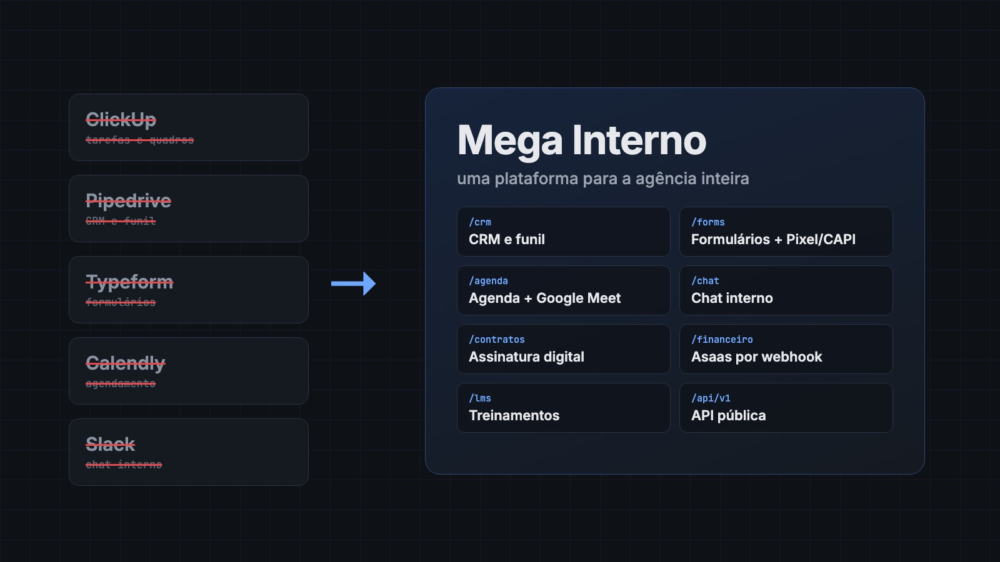

Mega Interno
ProblemaProblem
Uma agência de 80 pessoas pagava cinco ferramentas desconectadas e dependia de integrações frágeis entre elas.
An 80-person agency paid for five disconnected tools and relied on fragile integrations between them.
O que fizemosWhat we built
Uma plataforma única: CRM, formulários com rastreamento, agenda, chat, contratos, financeiro, LMS e API pública, com permissões por cargo.
A single platform: CRM, tracked forms, scheduling, chat, contracts, billing, LMS and public API, with role-based permissions.
ResultadoResult
Cinco assinaturas a menos, cerca de US$ 2,4 mil por mês, e os dados da operação num lugar só. Foram 732 commits meus.
Five fewer subscriptions, about US$ 2.4k per month, and all operational data in one place. 732 commits of mine.
Por dentro da plataformaInside the platform
Telas reais do GrowFirst, a versão SaaS do Mega Interno, rodando com dados 100% fictícios (empresas, CNPJs e e-mails inventados). Clique para ampliar.Real GrowFirst screens (the SaaS version of Mega Interno) running with 100% fictitious data (made-up companies, tax IDs and emails). Click to enlarge.
Estimativa com preços de tabela anuais: Slack Pro e ClickUp Business para 80 pessoas, Pipedrive Growth e Calendly Teams para 15 do comercial e Typeform Business. Código privado da empresa.
Estimate using annual list prices: Slack Pro and ClickUp Business for 80 people, Pipedrive Growth and Calendly Teams for 15 sales seats, and Typeform Business. Private company code.